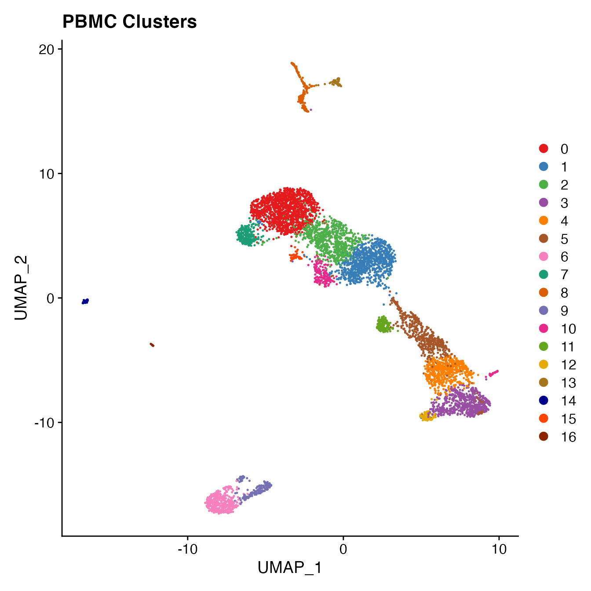

Biaxial Gating of a Single Sample (Fig. S3)
Benjamin R Babcock
Biaxial_Gating.RmdProcessing the Seurat Object:
Data filtering & normalization
library(BatchNorm)
# Import unfiltered Seurat object (included with 'BatchNorm' package)
data(PBMC4A)
# Run "standard" Seurat workflow
PBMC4A <- PBMC4A %>%
MitoFilter() %>%
NormalizeData(assay = "RNA", verbose = FALSE) %>%
FindVariableFeatures(selection.method = "vst", nfeatures = 2000, verbose = FALSE) %>%
ScaleData(verbose = FALSE) %>%
RunPCA(npcs = 30, verbose = FALSE)Selecting the appropriate number of Principal Components for UMAP reduction
# Identify correct numbers of PCs
#PBMC4A.pca.test <- TestPCA(object = PBMC4A)
#PBMC4A.pca.test[, 1:20]
# 16 PCs with a z-score > 1
# Proceed with 16 PCs for dimensional reduction & clustering
# Visualize PCs plotted by standard deviation:
ElbowPlot(PBMC4A)## Selecting the appropriate number of Principal Components for UMAP reduction
PBMC4A <- PBMC4A %>%
RunUMAP(reduction = "pca", dims = 1:16, verbose = FALSE) %>%
FindNeighbors(reduction = "pca", dims = 1:16, verbose = FALSE) %>%
FindClusters(resolution = .8, verbose = FALSE)
# Visualize clusters on UMAP
DimPlot(PBMC4A, reduction = "umap", cols = colors.use) +
ggtitle("PBMC Clusters")
Biaxial Antigen Gating
B Cell Classification
# Produce scatter plot of CD20 vs CD19
d <- as.data.frame(FetchData(object = PBMC4A,
vars = c("adt_CD20", "adt_CD19", "seurat_clusters")))
## Format colnames to match FeatureScatter syntax
colnames(d) <- c("adt_CD20", "adt_CD19", "colors")
FeatureScatter(PBMC4A, "adt_CD20", "adt_CD19",
cols = colors.use, plot.cor = F) +
geom_density2d(data = d, color = "black", size = 1) +
theme_gray() +
labs(x = "CD20 (ADT)",
y = "CD19 (ADT)")
# clusters 6 & 9 contain B cells
# Subset B cells (CD20 vs CD19) and isolate Naive B cells (IGD+/CD27-)
bcells <- subset(PBMC4A, `adt_CD20` > 25 | `adt_CD19` > 10)
bcells[["IGD"]] <- colSums(bcells@assays$RNA@data[grep("^IGHD", rownames(bcells)), ])
d <- as.data.frame(FetchData(object = bcells,
vars = c("IGD", "adt_CD27", "seurat_clusters")))
## Format colnames to match FeatureScatter syntax
colnames(d) <- c("IGD", "adt_CD27", "colors")
FeatureScatter(bcells, "adt_CD27", "IGD", plot.cor = F,
cols = colors.use[c(2, 4, 7, 9, 10, 14, 15)]) +
geom_density2d(data = d, color = "black", size = 1) +
labs(x = "CD27 (ADT)",
y = "Total IGHD Expression (RNA)") + theme_gray() +
coord_cartesian(ylim = c(-0.3, 3.5), expand = T)
# cluster 6 contains Naive B cellsNK Cell Classification
# Remove B cells (already classified) and continue to classify non-B cell PBMCs
nonclassified <- subset(PBMC4A, idents = c(6, 9), invert = T)
d <- as.data.frame(FetchData(object = nonclassified,
vars = c("adt_CD56", "adt_CD14", "seurat_clusters")))
## Format colnames to match FeatureScatter syntax
colnames(d) <- c("adt_CD56", "adt_CD14", "colors")
FeatureScatter(nonclassified, "adt_CD14", "adt_CD56", plot.cor = F,
cols = colors.use[c(1:6, 8:9, 11:17)], pt.size = 3) +
geom_density2d(data = d, color = "black", size = 1) +
labs(x = "CD14 (ADT)",
y = "CD56 (ADT)") + theme_gray()
# clusters 3, 4, 5 & 12 appear to contain NK cells
# Cluster 12 appears to contain mostly CD56Hi NK cells
# We can further classify NK cells and confirm using CD3 ADT & NKG7 transcript
nkcells <- subset(PBMC4A, idents = c(3, 4, 5, 12))
d <- as.data.frame(FetchData(object = nkcells,
vars = c("NKG7", "adt_CD3", "seurat_clusters")))
## Format colnames to match FeatureScatter syntax
colnames(d) <- c("NKG7", "adt_CD3", "colors")
FeatureScatter(nkcells, "adt_CD3", "NKG7",
cols = colors.use[c(4, 5, 6, 14)], pt.size = 3, plot.cor = F) +
geom_density2d(data = d, color = "black", size = 1) +
labs(x = "CD3 (ADT)",
y = "NKG7 (RNA)") + theme_gray()
# cluster 12 = CD56Hi NK cells, Clusters 3 & 4 = NK Cells, Cluster 5 = NK-T CellsMonocyte Classification
nonclassified <- subset(PBMC4A, idents = c(6, 9, 3, 4, 12, 5), invert = T)
d <- as.data.frame(FetchData(object = nonclassified,
vars = c("adt_CD16", "adt_CD14", "seurat_clusters")))
colnames(d) <- c("adt_CD16", "adt_CD14", "colors")
FeatureScatter(nonclassified, "adt_CD14", "adt_CD16",
cols = colors.use[c(1:3, 8:9, 11:12, 14:17)], pt.size = 3, plot.cor = F) +
geom_density2d(data = d, color = "black", size = 1) +
labs(x = "CD14 (ADT)",
y = "CD16 (ADT)") + theme_gray()
# Cluster 8 = classical monocytes, 13 = non-classical monocytesHSPC Classification
nonclassified <- subset(PBMC4A, idents = c(6, 9, 3, 4, 12, 5, 8, 13), invert = T)
# Create a variable comparing only cluster 16 to all other unclassified clusters
nonclassified[["HSPC_gate"]] <- rep("Other Clusters", nrow(nonclassified[[]]))
HSPCs <- WhichCells(nonclassified, idents = 16)
nonclassified@meta.data[HSPCs, "HSPC_gate"] <- "16"
nonclassified@meta.data[, "HSPC_gate"] <- factor(nonclassified@meta.data[, "HSPC_gate"],
levels = c("Other Clusters", "16"))
VlnPlot(nonclassified, "CD34", cols = colors.use[c(1:3, 8, 11:12, 15:17)],
group.by = "HSPC_gate")
# Cluster 16 = HSPCsT Cell Classification
nonclassified <- subset(PBMC4A, idents = c(6, 9, 3, 4, 12, 8, 5, 13, 16), invert = T)
d <- as.data.frame(FetchData(object = nonclassified,
vars = c("adt_CD8A", "adt_CD4", "seurat_clusters")))
colnames(d) <- c("adt_CD8A", "adt_CD4", "colors")
FeatureScatter(nonclassified, "adt_CD8A", "adt_CD4",
cols = colors.use[c(1:3, 8, 11:12, 15:16)], pt.size = 3, plot.cor = F) +
geom_density2d(data = d, color = "black", size = 1) +
labs(x = "CD8A (ADT)",
y = "CD4 (ADT)") + theme_gray()
# 0, 1, 2, 15 = CD4+ T-cell; 7, 11 = CD8+ T-cell
nonclassified <- subset(PBMC4A, idents = c(6, 9, 3, 4, 12, 8, 5, 13, 16, 7, 11), invert = T)
# Create a variable comparing only cluster 10 to all other unclassified clusters (other CD4+ T Cells)
nonclassified[["Treg_gate"]] <- rep("Other CD4+", nrow(nonclassified[[]]))
Tregs <- WhichCells(nonclassified, idents = 10)
nonclassified@meta.data[Tregs, "Treg_gate"] <- "10"
nonclassified@meta.data[, "Treg_gate"] <- factor(nonclassified@meta.data[, "Treg_gate"],
levels = c("Other CD4+", "10"))
VlnPlot(nonclassified, "FOXP3", cols = colors.use[c(11, 15)],
group.by = "Treg_gate")
# Cluster 10 = Treg cellsPlasmacytoid Dendritic Cell Classification
nonclassified <- subset(PBMC4A, idents = c(6, 9, 3, 4, 12, 8, 5, 13, 16, 7, 11), invert = T)
nonclassified[["pDC_gate"]] <- rep("Other CD4+", nrow(nonclassified[[]]))
PDCs <- WhichCells(nonclassified, idents = 14)
nonclassified@meta.data[PDCs, "pDC_gate"] <- "14"
nonclassified@meta.data[, "pDC_gate"] <- factor(nonclassified@meta.data[, "pDC_gate"],
levels = c("Other CD4+", "14"))
VlnPlot(nonclassified, 'LILRA4', cols = colors.use[c(11, 15)],
group.by = "pDC_gate")
# Cluster 14 = pDCsAssigning Cell Classification Labels
# Assign cell classification labels to clusters, as follows:
# 6 = B Naive
# 9 = B memory
# 3, 4 = NK
# 5 = NK_T
# 12 = CD56Hi NK
# 8 = classical monocytes
# 13 = non-classical monocytes
# 16 = HSPCs
# 0, 1, 2, 15 = CD4+ T-cell
# 7, 11 = CD8+ T-cell
# 10 = TRegs
# 14 = DCs
Idents(PBMC4A) <- PBMC4A[["seurat_clusters"]]
Idents(PBMC4A) <- plyr::mapvalues(Idents(PBMC4A), from = c(0, 1, 2, 3, 4, 5,
6, 7, 8, 9, 10,
11, 12, 13, 14, 15,
16),
to = c('T_CD4', 'T_CD4', 'T_CD4', 'NK', 'NK', 'NK_T',
'B_Naive', 'T_CD8', 'Monocyte_Classical', 'B_Memory', 'TReg',
'T_CD8', 'NK_CD56Hi', 'Monocyte_NonClassical', 'Dendritic_Cells', 'T_CD4',
'HSPCs'))
# Order cell classifications
Idents(PBMC4A) <- factor(Idents(PBMC4A),
levels = c("B_Naive", "B_Memory", "T_CD4", "TReg",
"T_CD8", "NK_T", "NK", "NK_CD56Hi",
"Monocyte_Classical", "Monocyte_NonClassical",
"Dendritic_Cells", "HSPCs"))
PBMC4A[["Cell_Type"]] <- Idents(PBMC4A)
UMAPPlot(PBMC4A, cols = colors.use, pt.size = 2, label = F)